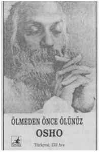

Ölüm dıştaki herşeyinizi alır ve içsel olarak kendinizi geliştiremediğiniz taktirde doğal olarak hiçbir şeyi ölümden koruyamayacağınız ve sahip olduğunuz her şeyi yitireceğinize dair korku duyarsınız. Ancak içsel benliğinizi geliştirip, dış etkenlerden bağımsız olarak huzur, mutluluk, sükunet ve neşeye kavuşabilmeseniz, benliğinizin ait olduğu bahçeye varıp, saf bilincinizin açan çiçeklerini görebilmişseniz, ölüm korkusu diye bir konu sizin için söz konusu bile olamaz.
Yaşayabildiğiniz kadar yoğun ve dolu dolu yaşayın ki, yaşamın tadı, ölümün neden korkulacak bir şey olmadığına dair bir ipucu sunsun size. Yaşamınızı tanıdığınız taktirde, onun ışığında ölüm diye bir şeyin olmadığını anlarsınız.
Kişinin ancak dolu dolu yaşayarak tanıyacağı bu yaşam sonsuzdur.
Siz yaşadıkça, bu sonsuzluk duygusu da eş zamanlı olarak ortaya çıkacaktır. Ne kadar yoğun yaşarsanız bu duyguyu da o kadar derinden hissedecek, ölümün olmadığını da o kadar hızlı kavrayacaksınız.
Benim dinimde ölüm kutlanacak bir şeydir çünkü aslında ölüm diye bir şey yoktur. O yalnızca yeni bir yaşama açılan kapıdır.